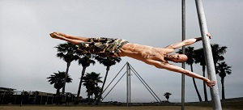
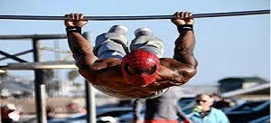
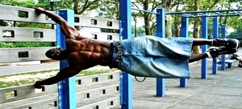
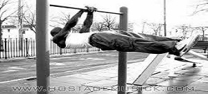

Street Workout-це вид спорту який має найрізноманітніші види:




Атлетичні вправи - система вправ різного рівня складності, що сприяють підсиленню здоров'я, розвитку сили та витривалості а також формуванню атлетичної статури.
Калістеніка (англ. Calisthenics) – комплекс простих вправ, які виконують використовуючи виключно власну вагу тіла. Ціль цих вправ - розвинути мускулатурну силу та розвинути всебічний фітнес.
Паркур (англ. Parkour) – фізична дисципліна французького походження, в якій учасники біжать за маршрутом, намагаючись перейти перешкоди найбільш ефективним способом, використовуючи лише власні тіла. Для паркуру необхдні такі навички як стрибки, лазіння тощо. Заснований паркур французом Девідом Беллом.
Хіп-хоп музика – форма музичного вираження та артистична культура, що утворилася серед афроамериканської громади у середині 1970-их років у районі Бронкс, Нового Йорку. На зорі утворення, на хіп-хоп надзвичайно вплинув традиційний музичний стиль Джамайки. Жанр зазвичай складається з римованих виразів, що звуться “реп”, та які супроводжуються музикою.
.jpg)